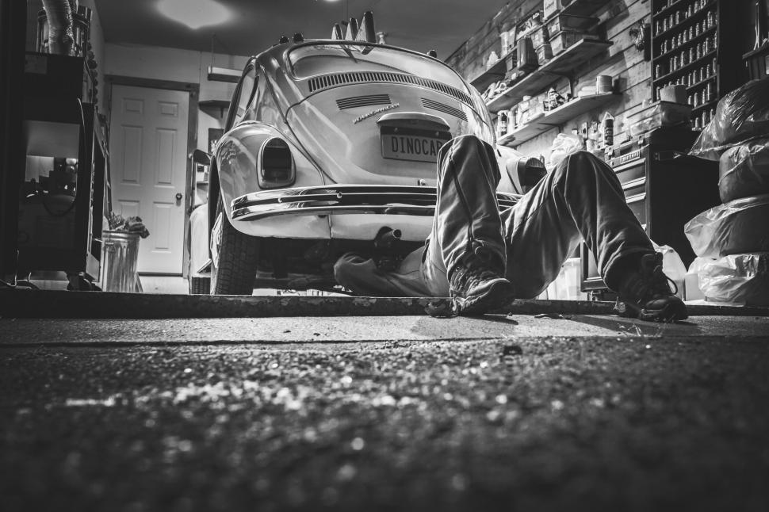

Підготовка авто до продажу
Ви вирішили продати своє авто і маєте сумніви з чого краще почати? Не проблема! Нижче ми розповімо, які кроки потрібно виконати, щоб передати вашого “скакуна” за тією ціною, на яку він заслуговує:)
Виділимо 4 підготовчих етапи:
- Зовнішній вигляд
- Технічний стан
- Документація
- Оцінка авто та вибір майданчику для продажу
Зовнішній вигляд
Водні процедури
Перш ніж віддавати автомобіль у мийку або виконувати цей процес самому, зверніть увагу на ряд дрібних деталей:- будь-які наявні молдінги повинні бути рівні, оскільки під ними можуть ховатися пошкодження.
- усі накладні деталі повинні бути надійно прикріплені.
- якщо є подряпини, варто їх зафарбувати відповідним кольором авто
- від незначних подряпин та для оновлення лакофарбового покриття допоможе полірування кузова.
- якщо у фарах чи ліхтарях присутня волога - розберіть та протріть їх із середини.
 Якщо ви вирішили скористатися послугами автомийки, то обов’язково перевірте, щоб був вимитий підколесний простір.
Якщо ви вирішили скористатися послугами автомийки, то обов’язково перевірте, щоб був вимитий підколесний простір.
Чистка салону
Перше, що може відштовхнути людину від покупки авто — це запах салону. Якщо вам здається, що всередині і так приємно пахне, то ви можете помилятися. Оскільки ви звикли до цих запахів, то можете не помітити проблем. Тому переконайтеся у виконанні наступних пунктів:
- використати нейтральний ароматизатор
- якщо ви палите, то варто хоча б за місяць перестати це робити в салоні, щоб вивести запах.
- протерти від пилу решітки кондиціонера
- бажано замінити салонний фільтр
- ретельно пропилососьте всередині
- вимийте скло із середини
- натріть пластик матовим поліролем для природнього вигляду
- очистіть стелю від плям
Технічний стан
 “По одежі стрічають, а по уму випроводжають” — це не лише про людей, а й автомобілі. Саме стан внутрішніх компонентів впливає на придатність транспортного засобу до їзди та кінцеве рішення покупця. Якщо є бажання або хочеться заощадити кошти на послугах сервісного центру, то наступні рекомендації можна виконати самостійно:- Відмити двигун. Без попереднього досвіду не варто робити парову чистку, оскільки є ризик пошкодження підкапотних частин за недотримання технологічних норм.
- Відмити розводи від витратних рідин та сліди на бачку омивача.
- За необхідності зробити заміну свічок запалювання, хомутів та переліжок кришок.
- Наповнити рідиною усі бачки та проконтролювати колір та рівень двигунного масла.
- Перевірити справність гальмів та зокрема відрегулювати ручник.
- Замінити перегорілі індикатори та лампочки фар
Також варто залити преміум бензин, що збереже двигун і дозволить йому працювати стабільніше. Не буде підготувати книгу авто із історією його обслуговування та пошкоджень. Це допоможе завчасно ознайомити потенційного покупця із усіма можливими проблемами.
Підготовка документації
На цьому етапі, ви вже привели ваше авто до товарного вигляду і тепер можна починати збирати документи для забезпечення законності продажу. Повний перелік необхідних документів:
- Паспорт та ідентифікаційний код продавця
- Паспорт та ідентифікаційний код покупця
- Технічний паспорт автомобіля
- За наявності документи про право власності (нотаріальні угоди, дарча, купівля-продаж і т.д)
- Заява на перереєстрацію — можна оформити в центрі МВС
- Оцінка вартості транспортного засобу — потрібна за необхідності сплати податків